mark • 15 • music creator • internet faggot
online: b4ttouxai / m4rkyyy
i'm mark. i'm 15. online i go by b4ttouxai or m4rkyyy.
under the name b4ttouxai i make music so i can express myself better.
my first project is "The Hidden Artifact". chapter one recently ended and i'm looking forward to creating chapter two.
i like depressive suicidal, and raw black metal. but i guess i like other stuff also.
i like playing online and stuff like that.
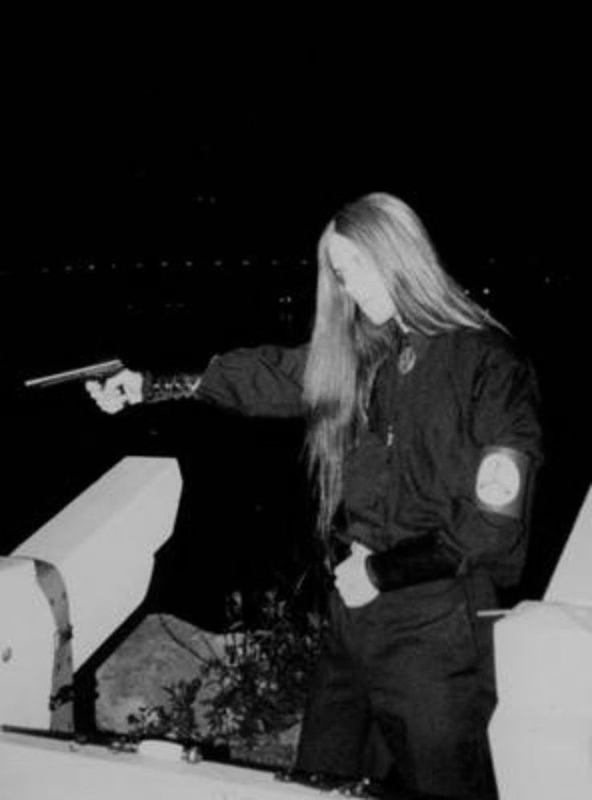
a personal music project.
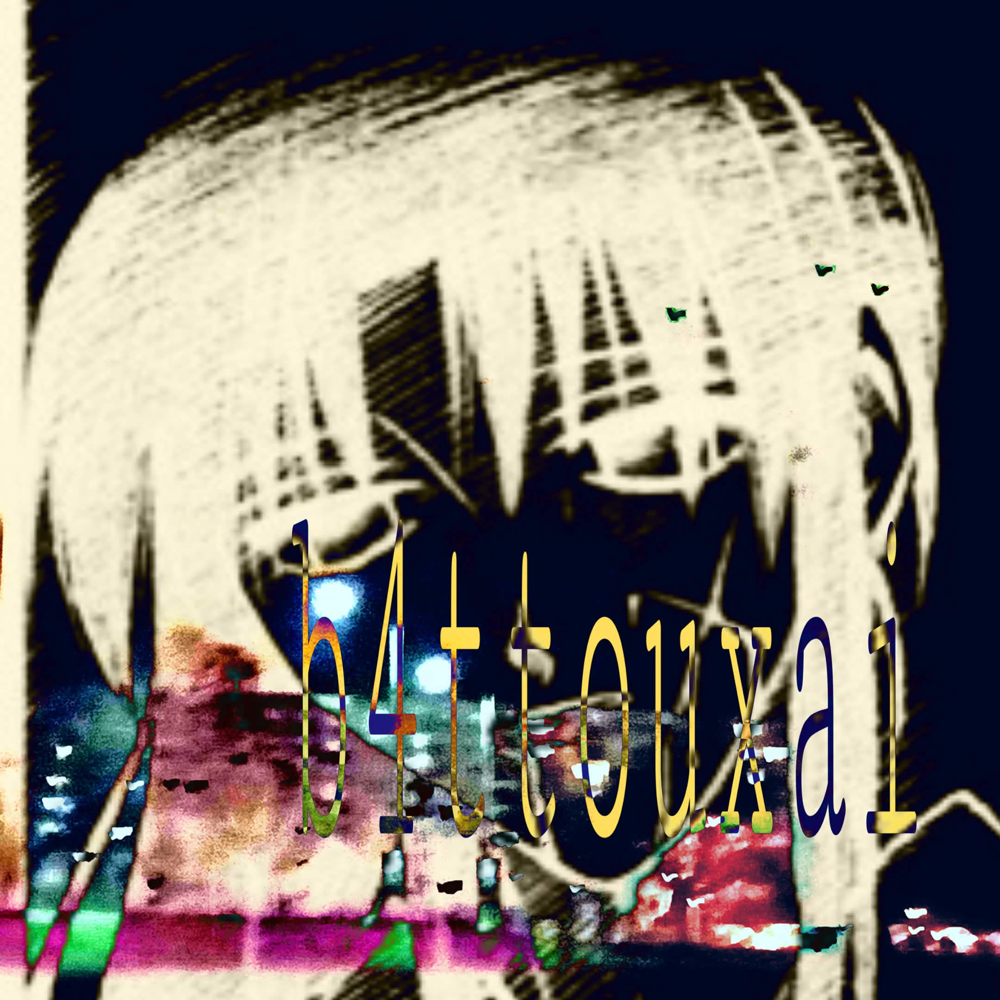
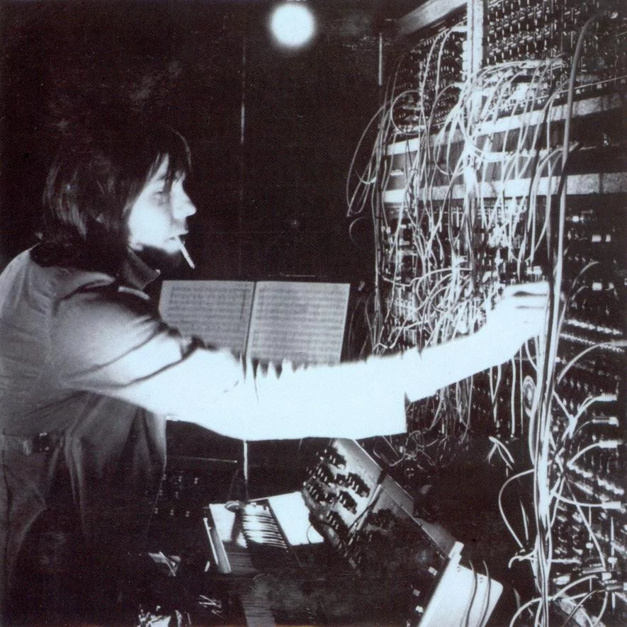
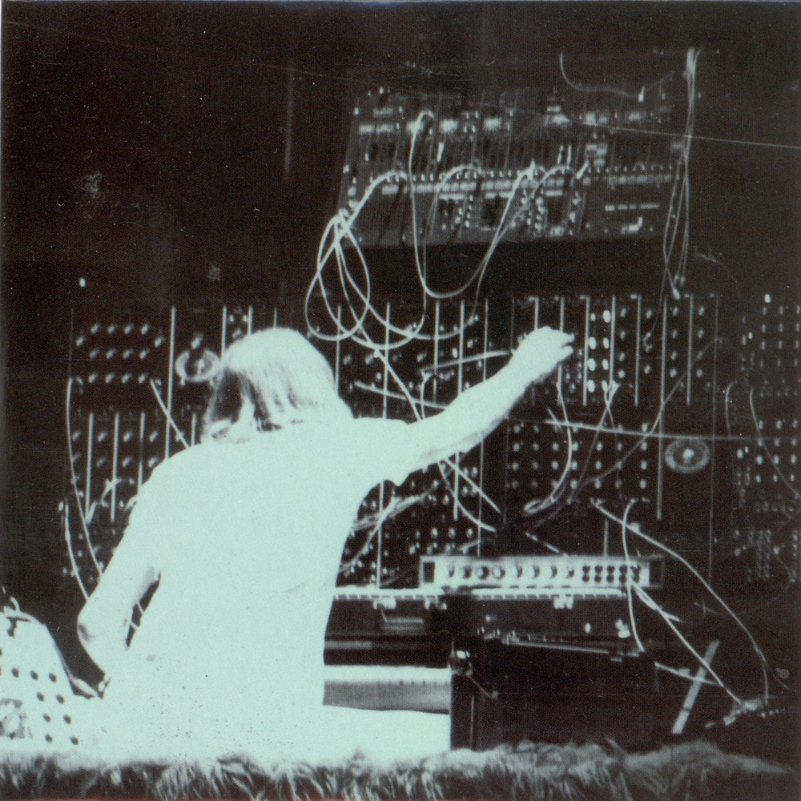
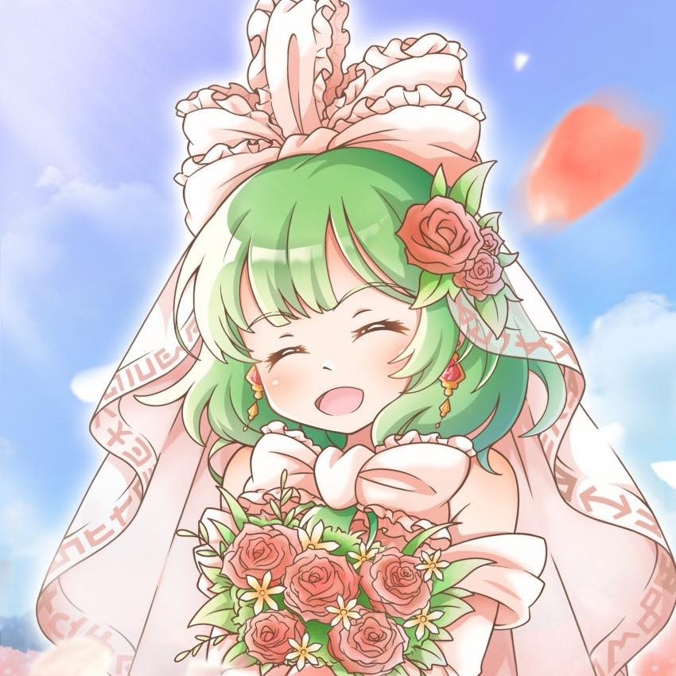
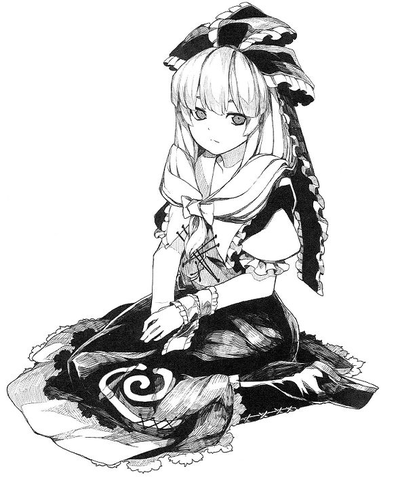
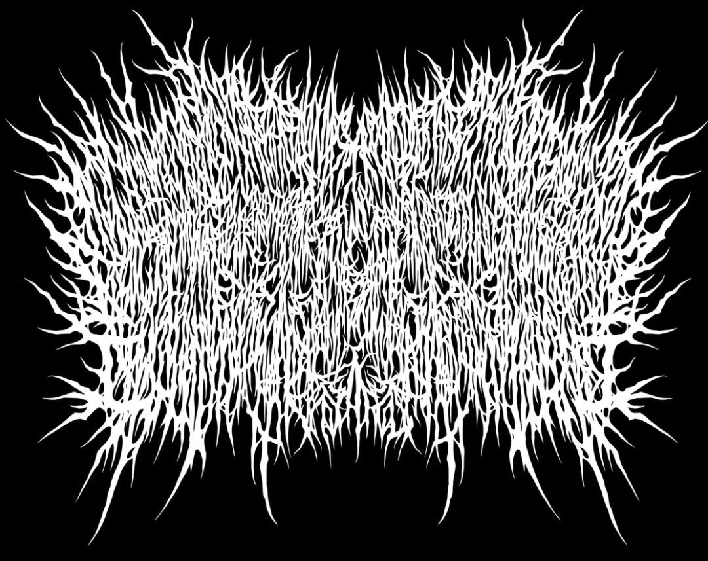
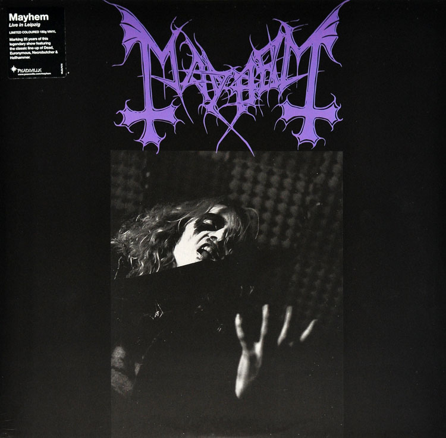
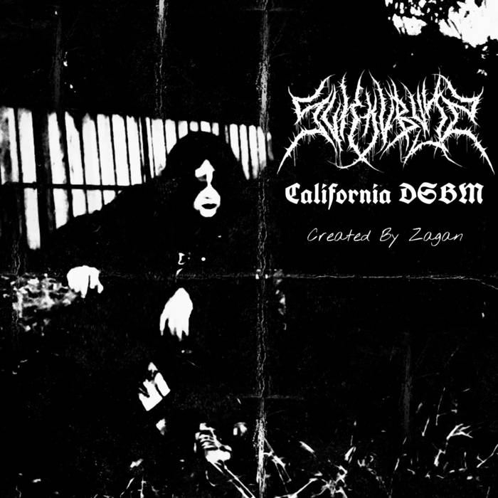
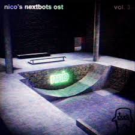
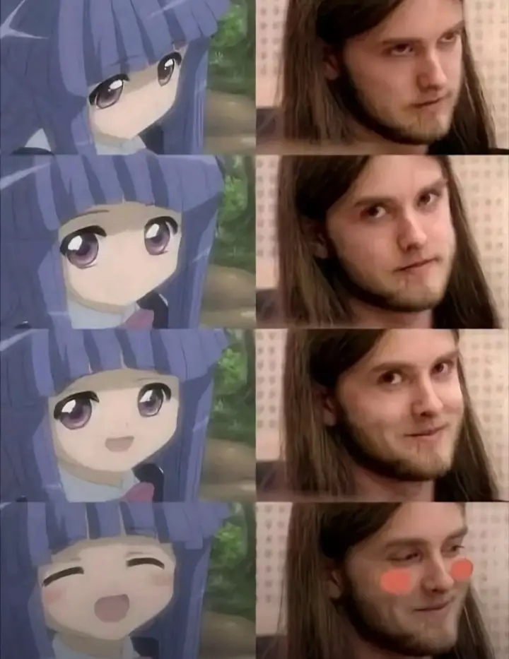
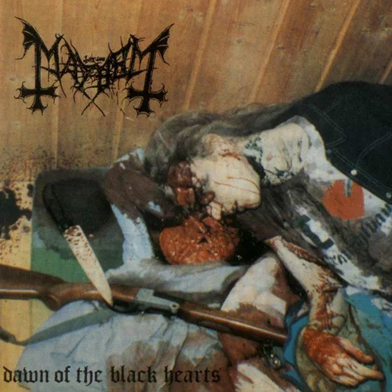
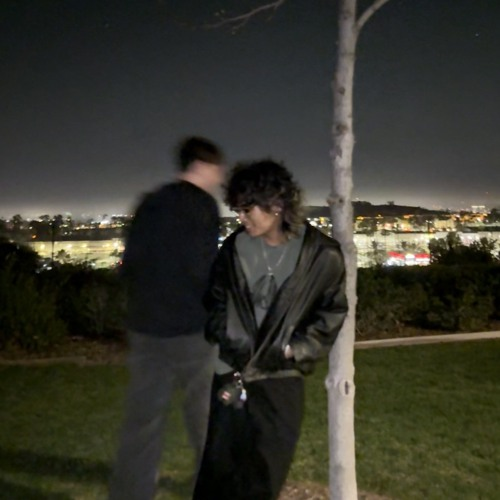
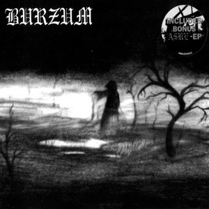
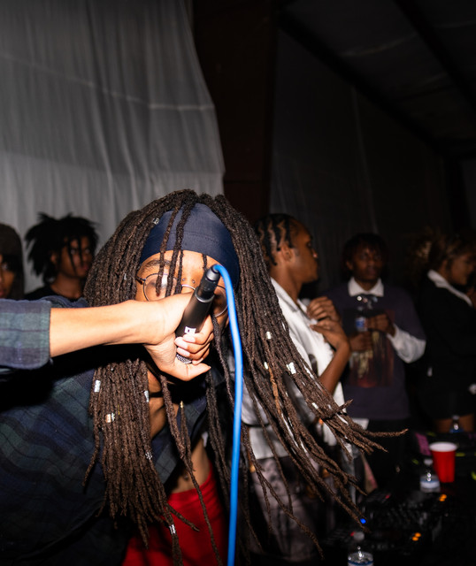
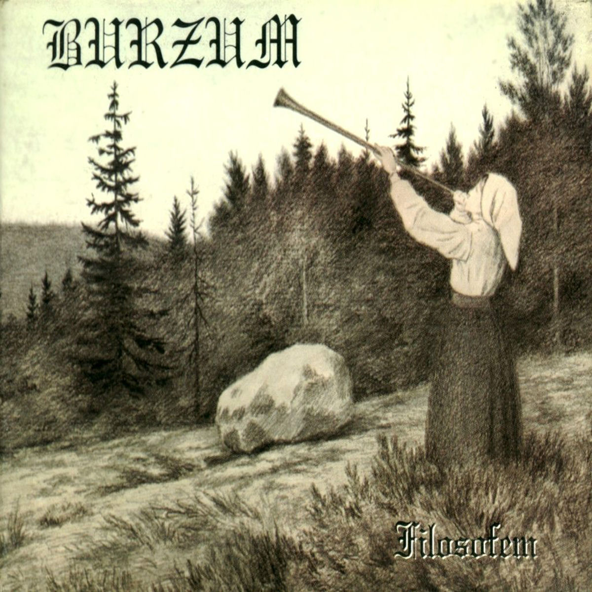
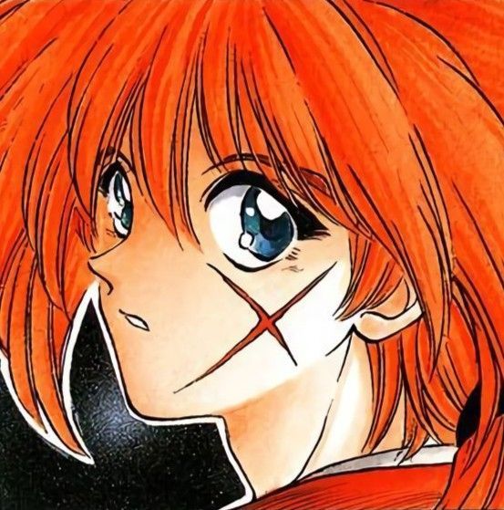
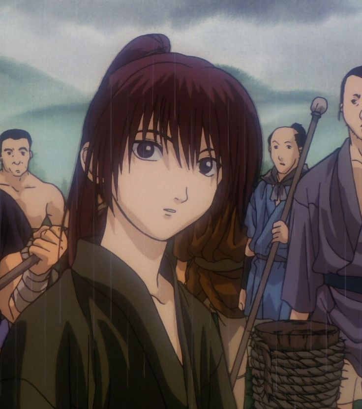